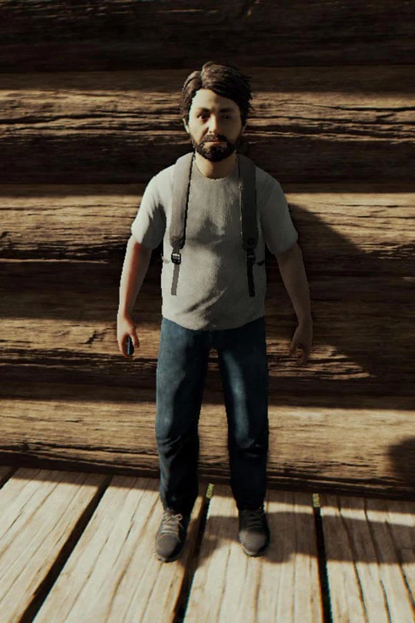

Информация об игре
Герой - Эрик ЛеБланк вместе с сыном летят назад домой (По футболкам некоторых пассажиров они улетали из Нью-Йорка). Но вдруг самолет падает на полуостров. Герой и его сын выживают, но его сына уносит некий красный человек прямо на глазах отца. Герой осваивается на полуострове и находит проход в лабораторный комплекс через пещеры и проникает в него, перед этим найдя ключ-карту. Продвигаясь по лаборатории, он узнаёт о деятельности бункера, судьбе красного человека и информацию о неких артефактах, найденных на полуострове. В конце концов герой находит своего сына, закреплённым в артефакте воскрешения мертвым. Отец достаёт сына и кладёт его на нанотехнологический стол. Герой едва теряет надежду, когда как замечает какие-то трубки. Он прилепляет их к сыну, и осознает, что его можно воскресить, но ценой жизни другого человека. Проходя по помещениям, герой находит Меган Кросс, девочку, которую воскресил ее отец, ценой жизни Тимми. Она посчитала его красным человеком, показывая игрушкой, что он сбил самолет, мутирует на глазах героя, и тот вступает в бой с ней, в итоге побеждая. Он несет ее тело в артефакт, но тому нужен живой образец. Окончательно потеряв надежду, герой идет по лаборатории и находит артефакт, который может выводить из строя различную технику. Этим артефактом в начале игры нас и сбили. В комнате находится пульт управления артефактом и ноутбук с которыми мы можем взаимодействовать. Перед главным героем встаёт выбор: активировать артефакт, который собьёт мимо пролетающий самолёт, или отключить артефакт. В игре существует две концовки сюжета.
Персонажи
В данной игре, присутствует только главный герой и его сын
Эрик ЛеБланк
Герой - Эрик ЛеБланк вместе с сыном летят назад домой (По футболкам некоторых пассажиров они улетали из Нью-Йорка) пол: мужской возраст: +- 37 лет
Интересные механики и тактики
механика жажды и голода
персонаж нуждаеться в еде и воде, если индикатор воды и еды опустяться до 0, игрок будет получать урон. так же есть механика холода, если главный герой находиться под дождём он начинает понемногу замерзать. есть механика загрязнения, если главный герой покрыт кровью или грязью, у него есть шанс заболеть и чтобы вылечиться нужно помыться и выпить таблетки.
Полезные навыки развиваемые в игре.
- скорость реакции: оборегены на острове очень опасные и непредсказуемые, если не успеть среагировать, главного героя уже забьют камнями и палками до смерти.
- Выживание: пить грязную воду и есть сырое мясо, так себе развлечение, игра учит фильтровать воду и жарить мясо на огне
- анализ: в игре много ловушек для главного героя, как от оборегенов так и от самой природы, ввиде глубоких ям и скал, поэтому нужно анализировать